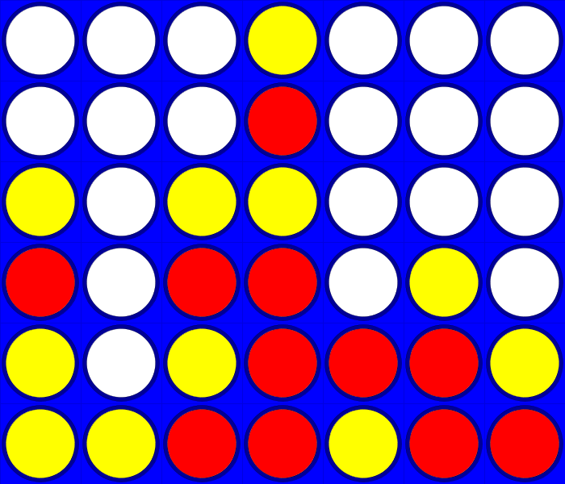

Im Rahmen der Projektwoche im Modul Objektorienterte Programmierung unter Prof.Klaus Quibeldey-Cirkel haben wir vom 01.06.2015 bis zum 05.06.2015 einige Interessante Programme erarbeitet, welche ich euch gerne vorstellen möchte. Die Woche lief ganz unter dem Motto Spiele und so haben wir an Tetris, Shufflepuck und co. unsere Programmierfähigkeiten als kleine Teams von bis zu fünf Personen auf die Probe gestellt. Das Programmieren mit Processing war ein voller Erfolg und so können sich die Ergebnisse sehen lassen. Unter einer kleinen Beschreibung ist jeweils ein Download Link bereit gestellt, damit ihr euch auch selbst überzeugen könnt.
Eingeleitet wurde die Woche mit dem kleinem Spiel TicTacToe. Nach
einer kurzen Einführung und dem Erstellen der UML Diagramme haben wir uns gleich an
die Arbeit gemacht. Für einen Computergegner hat die Zeit leider
nicht mehr gereicht, aber man kann sich mit einem anderen Mitspieler
messen.
TicTacToe
Download
Beim zweiten Teil wurde es schon etwas komplizierter. Nach dem
einfachen Tikcoe war nun das bekannte Gesellschaftsspiel Vier gewinnt
an der Reihe. Nachdem wir den Rahmen schnell aufgestellt hatten,
mussten wir uns der größten Hürde dieses Projektes stellen: der KI.
Auch wenn der Computer bis zuletzt einige kleine Schwächen gezeigt
hat, hat er sich im Verlauf mehrerer Versionen zu einem
ernstzunehmenden Gegner entwickelt.
Viergewinnt Download

Im letzten Teil dann, wurden wir vor die Wahl gestellt, uns eines von
zwei möglichen Spielen anzunehmen. Aufgrund seines höheren
Bekanntheitsgrades und programmiertechnischen Anspruches entschieden
wir uns gegen Shufflepuck und für Tetris. Da dieses Projekt im Ganzen
um einiges umfangreicher war als die vorherigen, wurden uns hier für
die Bearbeitung drei Tage gegeben. Dieses Zeitfenster haben wir auch
vollkommen ausgenutzt, um neben mehreren Fehlern, die zu beheben
waren, Musik sowie einen extra Schwierigkeitsgrad für die Spieler zu
erstellen, die die besondere Herausforderung suchen.
Tetris Download